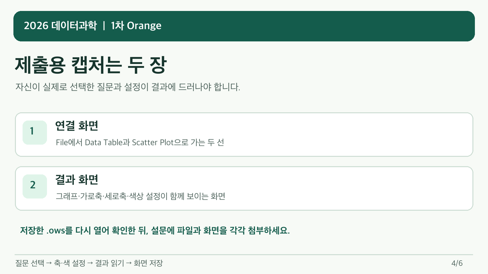

개정 전 8열 CSV를 읽은 실제 화면. 180개 사례를 확인합니다. · 누르면 크게 볼 수 있습니다.
③ File에서 두 곳으로 연결하기
왜 두 곳에 연결할까요? File은 CSV를 읽어 같은 자료를 두 도구로 보냅니다. Data Table에서는 행 수·열 이름·값과 빈칸을 확인해 자료를 제대로 읽었는지 살핍니다. Scatter Plot에서는 고른 숫자 열 두 개를 가로축·세로축에 놓아 점의 분포와 예외를 봅니다. 따라서 File → Data Table과 File → Scatter Plot을 각각 연결하세요. Data Table을 거쳐 Scatter Plot으로 잇는 순서가 아니라, 같은 원자료가 두 갈래로 갑니다.
File을 왼쪽 가운데에 두고 Data Table을 오른쪽 위, Scatter Plot을 오른쪽 아래에 두면 두 선의 출발점과 도착점이 겹치지 않아 확인하기 쉽습니다. 두 선에 Data가 표시되는지 살펴보세요. 위치 자체가 점수 기준은 아니며, 이 배치는 연결을 쉽게 확인하기 위한 예시입니다.
개정 전 8열 CSV로 만든 OWS를 다시 연 실제 작업 화면. · 누르면 크게 볼 수 있습니다.화면 캡처를 실제 파일로 저장하기 · 프로그램 설치 불필요
클립보드에 복사된 것만으로는 제출할 파일이 아닙니다. 반드시 .png 파일이 생겼는지 확인하세요. 캡처 영역을 잘못 잡았다면 Esc로 취소하고 다시 합니다.

결과 화면을 저장하기 전 확인
Windows · 기본 ‘캡처 도구’로 저장
연결 화면이 보이도록 한 뒤 Win + Shift + S를 누르고, 사용한 위젯과 모든 연결선이 보이는 영역을 끌어서 선택합니다.
화면 오른쪽 아래에 나타난 캡처 알림을 누르면 Windows 기본 캡처 도구가 열립니다.
다른 이름으로 저장 또는 Ctrl + S를 누르고, 1차_수행평가 폴더에 학번_이름_연결.png로 저장합니다.
결과 화면으로 돌아가 그래프·축 이름·사용한 설정이 보이게 다시 캡처하고 학번_이름_결과.png로 저장합니다.
캡처 알림을 놓쳤다면 Windows 기본 앱 그림판을 열고 Ctrl + V로 붙인 뒤 Ctrl + S로 PNG 파일을 저장해도 됩니다. 마이크로소프트 공식 캡처 도구 안내
Mac · 단축키로 바로 파일 저장
연결 화면이 보이도록 한 뒤 ⌘ + Shift + 4를 누르고, 사용한 위젯과 모든 연결선이 보이는 영역을 끌어서 선택합니다.
기본 설정에서는 캡처가 바탕 화면에 파일로 저장됩니다. Finder에서 파일 이름을 학번_이름_연결.png로 바꾸고 1차_수행평가 폴더로 옮깁니다.
결과 화면으로 돌아가 그래프·축 이름·사용한 설정이 보이게 다시 캡처하고 학번_이름_결과.png로 이름을 바꾸어 옮깁니다.
저장 위치를 바꾼 적이 있다면 ⌘ + Shift + 5 → 옵션에서 현재 저장 위치를 확인하거나 1차_수행평가 폴더로 지정하세요. 이미지가 HEIF로 저장된다면 형식에서 SDR(높은 호환성·PNG)를 선택한 뒤 다시 캡처합니다. 파일 이름 끝만 PNG로 바꾸지는 마세요. Apple 공식 스크린샷 안내
마지막 확인:학번_이름_연결.png와 학번_이름_결과.png를 각각 다시 열어 글씨·축 이름·연결선이 읽히는지 확인합니다. 두 화면은 한 이미지로 합치지 말고 별도 파일로 저장합니다.
이제 파일 세 개가 있나요? 작업 파일 .ows 한 개와 화면 이미지 두 장입니다. .ows는 도구와 연결을 저장한 파일이며, 개인 자료를 썼다면 원본 CSV·Excel도 함께 보관하고 제출합니다.
4. 일곱 질문 쓰기 · 시작말과 예시
길게 쓰지 않아도 됩니다. 아래 예시는 11번 로봇 자료로 작성한 가상 학생의 답입니다. 내 경험과 결과로 바꾸어 씁니다.
각 질문에 맞는 짧고 완결된 문장 3개를 목표로 쓰세요. 아래 시작말은 작성 도움이며, 각 줄을 별도 1점으로 채점하지 않습니다.
Q1은 만든 것 소개, Q4는 그래프에서 발견한 것입니다. Q6은 이번 경험과 느낌, Q7은 다음 개선 계획입니다.
Q1. 어떤 결과물을 만들었나요? (3점)
작성 도움 · 문장 시작말
만든 결과물을 소개하세요. 발견한 내용은 4번에 씁니다.
시작말: 나는 ___을 알아보려고 했다. / Orange로 ___을 만들었다. / 이 결과물은 ___을 보여 준다.
실제 자료에 맞춘 3문장 예시 보기
저는 로봇 활동의 참여 정도와 성과가 어떤 모습으로 나타나는지 알아보고 싶었습니다.
그래서 참여지수와 성과지수를 점으로 보여 주는 그래프를 만들었습니다.
이 결과물은 활동유형에 따라 점의 색을 나누어 볼 수 있습니다.
내 자료로 바꿀 부분: 내가 고른 주제, 그래프의 두 축, 실제로 보여 주는 내용을 바꾸세요.
Q2. 어떤 자료를 불러왔나요? (3점)
작성 도움 · 문장 시작말
자료에 무엇이 들어 있고 제대로 열렸는지 설명하세요.
시작말: 내가 쓴 자료에는 ___이 담겨 있다. / 나는 ___ 항목을 살펴보았다. / 표에서 ___을 확인하여 자료가 열린 것을 알았다.
실제 자료에 맞춘 3문장 예시 보기
제가 사용한 자료는 교사 제공 11번 로봇 제작 활동에 관한 가상 자료입니다.
자료에는 활동유형과 참여지수, 성과지수 같은 항목이 있습니다.
Data Table에서 180개 사례와 여덟 열을 보고 자료가 열렸음을 확인했습니다.
내 자료로 바꿀 부분: 내 자료의 이름, 실제 항목, 직접 확인한 화면 내용으로 바꾸세요. 개인 자료에 180행·8열을 요구하지 않습니다.
Q3. 어떤 도구를 연결했나요? (3점)
작성 도움 · 문장 시작말
위젯은 Orange에서 사용하는 도구입니다. 이름·연결 방법·이유를 자기 작업에 맞게 쓰세요.
시작말: 나는 ___ 도구를 사용했다. / ___과 ___을 연결했다. / 이렇게 연결한 이유는 ___이다.
실제 자료에 맞춘 3문장 예시 보기
저는 File과 Data Table, Scatter Plot을 사용했습니다.
File에서 Data Table과 Scatter Plot으로 선을 각각 연결했습니다.
같은 자료를 표로 확인하고 그래프로도 보기 위해 이렇게 연결했습니다.
내 자료로 바꿀 부분: 내 작업 화면의 도구 이름과 실제 연결, 그 이유로 바꾸세요.
Q4. 그래프를 보고 무엇을 알았나요? (3점)
작성 도움 · 문장 시작말
실제로 눈에 보이는 특징 한 가지와 그 근거를 쓰세요. 어려운 통계 계산은 필요 없습니다.
시작말: 그래프에서 ___을 발견했다. / ___ 부분을 보고 그렇게 생각했다. / 이 자료에서는 ___이라고 설명할 수 있다.
실제 자료에 맞춘 3문장 예시 보기
그래프에서 참여지수가 높은 쪽에 성과지수도 높은 점들이 많이 보였습니다.
참여지수가 20점 안팎인 곳보다 80점 안팎인 곳에 성과지수 60점 위의 점들이 더 많이 보였습니다.
다만 이 가상 자료만으로 참여가 성과를 높인 원인이라고 단정할 수는 없습니다.
내 자료로 바꿀 부분: 내 그래프에서 정말 보이는 특징과 위치로 바꾸세요. 예시의 점수나 결론을 그대로 쓰지 마세요.
Q5. 이 활동이 나에게 어떻게 도움이 될까요? (3점)
작성 도움 · 문장 시작말
관심 분야나 공부와 연결해 보세요.
시작말: 나는 ___에 관심이 있다. / 이번 활동의 ___이 도움이 될 것 같다. / 앞으로 ___할 때 활용하고 싶다.
실제 자료에 맞춘 3문장 예시 보기
저는 기술 시간에 만드는 활동에 관심이 있습니다.
자료를 그래프로 보는 방법은 활동 기록을 비교할 때 도움이 될 것 같습니다.
앞으로 제작 과정을 기록하고 어떤 점이 달라졌는지 살펴보는 데 활용하고 싶습니다.
내 자료로 바꿀 부분: 내 관심 분야, 도움을 받을 상황, 활용 계획으로 바꾸세요.
Q6. 직접 해 보니 어땠나요? (3점)
작성 도움 · 문장 시작말
이번에 직접 한 경험과 배운 점·느낀 점을 쓰세요. 다음에 개선할 내용은 7번에 씁니다.
시작말: 직접 해 보며 ___을 배웠다. / ___을 해 보니 ___했다. / 활동을 마친 뒤 ___이라고 느꼈다.
실제 자료에 맞춘 3문장 예시 보기
처음에는 숫자가 많은 표를 어디부터 봐야 할지 막막했습니다.
두 도구에 선을 연결해 보니 같은 자료를 표와 그래프로 볼 수 있었습니다.
이번 활동을 통해 그림으로 나타내면 자료의 특징을 찾는 데 도움이 된다고 느꼈습니다.
내 자료로 바꿀 부분: 실제로 어려웠거나 새로 알게 된 경험과 내 느낌으로 바꾸세요.
Q7. 다음에 무엇을 보완하고 싶나요? (3점)
작성 도움 · 문장 시작말
아쉬운 점과 다음에 바꾸고 싶은 방법을 쓰세요.
시작말: 이번 작업에서 ___이 아쉬웠다. / 그 이유는 ___이다. / 다음에는 ___을 보완하고 싶다.
실제 자료에 맞춘 3문장 예시 보기
이번에는 참여지수와 성과지수의 관계만 본 점이 아쉽습니다.
활동시간과 성과가 어떤 모습으로 나타나는지는 살펴보지 못했기 때문입니다.
다음에는 가로축을 활동시간으로 바꾸어 비교해 보고 싶습니다.
내 자료로 바꿀 부분: 내 결과물에서 실제로 아쉬운 점과 다음에 해 볼 방법으로 바꾸세요.
5. 설문 제출과 마지막 확인
학교에서 안내한 Google 계정으로 제출 설문을 새 탭에서 여세요. 매뉴얼 탭으로 돌아오며 순서대로 진행할 수 있습니다.
첫 화면: 과제 제목·학번·이름을 쓰고 자료 유형을 고른 뒤 다음을 누릅니다. 기본정보는 점수에 넣지 않습니다.
자료 확인 화면: 아래에서 내 경우에 맞게 작성하고 다음을 누릅니다.
교사 자료: 파일 이름 앞의 두 자리 번호를 입력합니다. 예: 11. 원본 CSV·Excel은 다시 올리지 않습니다. 개인 자료 화면은 자동으로 건너뜁니다.
개인 자료: 파일 이름과 출처를 적고 실제 사용한 원본 CSV·Excel을 모두 올립니다. Excel은 사용한 시트 이름도 적습니다. 직접 만들었다면 출처에 ‘직접 작성’이라고 적습니다. 여러 원본을 썼다면 각 파일을 어느 File 도구에 연결했는지도 적습니다.
공통 응답 화면: Q1~Q7에 내 작업에 맞는 답을 각각 씁니다.
아래 파일 첨부 칸: .ows, 전체 연결 화면, 주요 분석 결과 화면을 각각 올립니다. 각 칸에 맞는 파일 이름이 표시되는지 확인합니다.
제출 상태: 파일까지 준비했으면 완료, 파일이 부족하면 파일 보완 필요를 고르고 바로 아래 사유 칸에 빠진 파일을 적습니다.
제출: 맨 아래 제출 버튼을 누릅니다. 응답이 접수되었습니다라는 안내까지 확인해야 전송이 끝납니다.
파일은 어떻게 올리나요?
해당 문항의 파일 추가를 누릅니다.
파일 선택 창에서 컴퓨터의 1차_수행평가 폴더를 열고 그 문항에 맞는 파일을 선택합니다.
업로드가 끝나고 설문에 돌아왔을 때 파일 이름이 표시되는지 확인합니다. 창에 업로드 버튼이 남아 있다면 눌러 완료합니다.
다른 첨부 칸에서도 같은 방법으로 각각 올립니다. 이름이 보이더라도 설문 맨 아래 제출을 눌러야 응답이 접수됩니다.
파일을 추가할 때 Google 로그인이 필요합니다. 첨부에 문제가 생기면 아래 ‘막혔을 때’의 안내대로 답부터 제출하세요.
제출 버튼을 누르기 전
이 체크 표시는 이 페이지 안에서만 쓰는 확인용이며, 창을 닫거나 새로 고치면 초기화될 수 있습니다. 체크해도 설문은 전송되지 않습니다. 설문 탭에서 제출 버튼을 누르세요.
제출한 뒤: 접수 안내를 확인했다면 완료입니다. 파일 보완이 필요하다면 빠진 파일과 오류 내용을 선생님께 알려 주세요.
정상적으로 마치려면 .ows 작업 파일, 전체 연결 화면, 결과 화면을 준비하세요. 개인 자료를 썼다면 실제 사용한 CSV·Excel 원본도 모두 올립니다. 답변과 첨부 항목을 선택 입력으로 둔 것은 파일 문제로 제출 자체가 막히지 않게 하기 위해서입니다. 미작성 답변이 만점을 받는다는 뜻은 아닙니다. 파일 문제가 생기면 작성한 답부터 기한 안에 제출하고 선생님께 알려 주세요.
File 도구에서 내가 사용한 자료를 다시 선택하세요. File에서 필요한 도구까지 선이 이어져 있는지 확인하세요. 그래프의 가로축과 세로축에 숫자 항목이 선택되어 있는지도 봅니다.
그래도 안 되면 현재 화면을 남기고 선생님께 알려 주세요. 다른 컴퓨터라서 파일 위치가 달라진 것은 감점하지 않습니다.
매뉴얼의 사진·영상·자료 링크가 열리지 않아요
ZIP 안에서 바로 열었거나 HTML 파일만 옮기면 사진·영상·자료를 찾지 못할 수 있습니다. 받은 매뉴얼 ZIP의 압축을 모두 풀고, 같은 폴더 안의 index.html을 여세요. assets와 downloads 폴더, manual.mp4도 함께 있어야 합니다.
그래도 열리지 않는 자료가 있으면 링크 이름과 화면을 선생님께 보여 주세요. PDF 안내는 페이지 맨 아래에서 받을 수 있습니다.
파일을 올릴 수 없어요
11월 6일 23:59까지 작성한 답과 준비된 자료부터 제출하고 선생님께 알려 주세요. 첨부 칸 아래 제출 상태 → 파일 보완 필요를 고르고, 사유 칸에 올리지 못한 파일과 오류를 적은 뒤 제출을 누릅니다. 설문 자체에 접근하지 못하면 오류 화면과 시간을 기록하여 즉시 선생님께 알리세요.
제출 후 기술 보완은 어디까지 가능한가요?
11월 9일 23:59까지 원래 작업의 파일 누락·손상·경로 문제를 복원할 수 있습니다. 필요하면 원래 작업을 선생님께 직접 보여 줄 수 있습니다.
같은 설문을 새로 엽니다. 첫 화면에 처음 제출과 같은 학번·이름·과제 제목·자료 유형을 쓰고 다음을 누릅니다.
자료 확인 화면에 처음과 같은 교사 주제 번호 또는 개인 자료 정보를 적습니다. 요청받은 개인 원본이 있다면 이 화면에서 첨부하고 다음을 누릅니다.
공통 응답 화면의 일곱 답변은 비워 두고, 아래 첨부 칸에 선생님이 요청한 원래 작업의 파일을 올립니다. 처음 제출한 답변을 그대로 평가합니다. 이전 작성 내용이 자동으로 채워졌다면 일곱 답변 칸은 비웁니다.
첨부 칸 아래 제출 상태에서 보완 제출을 고릅니다.
바로 아래 보완 내용 칸에 처음 제출한 때와 이번에 복원한 파일을 적습니다. 제출을 누르고 접수 안내를 확인합니다.
이 기간에는 답변을 고치거나 분석 목적·축·변수를 바꾸거나 새 결과를 추가하지 않습니다. 11월 6일 23:59까지 제출된 최신 유효 답변을 기준으로 평가합니다. 보완이 필요한 학생에게는 선생님이 필요한 자료를 안내합니다.
자세한 채점 기준 · 총 30점
30점 만점에서 기준에 따라 평가합니다. 제목·학번·이름, 제출 상태는 무배점입니다.
답변 21점: 일곱 질문에 각 3점
각 질문에 맞는 완결된 문장 3개 이상 3점, 2개 2점, 1개 1점, 인정되는 문장 없음 0점입니다. 같은 뜻의 반복은 한 문장으로 봅니다. 시작말 세 개는 쓰기 도움이며 각각 1점짜리 필수 요소가 아닙니다.
문항에 맞고 의미가 완결된 문장만 인정한다.
줄바꿈·마침표·문장 길이만으로 인정하지 않는다.
같은 내용을 표현만 바꾸어 반복한 문장은 한 문장으로 인정한다.
무관한 문장, 의미를 확인할 수 없는 문장, 사실과 다른 수치를 단정한 문장은 인정 여부와 이유를 기록한다.
Q4는 학생이 실제로 쓴 발견과 근거만 평가하며 교사가 학생 대신 발견을 만들어 내지 않는다.
경계 사례는 근거를 다시 확인하여 교사가 판단한다.
작업 파일 9점: 연결 상태 4점 + 분석 결과 5점
항목
만점
부분점수
0점인 경우
데이터 읽기 (2점)
학생이 선택한 분석 목적에 필요한 데이터와 시트를 실제로 읽음
파일은 열렸으나 필요한 시트·열·자료형 중 일부만 확인됨
실제 실행에서 필요한 데이터·시트를 읽지 못하거나 읽기 구성이 없음이 독립적으로 관찰됨
위젯 연결 (2점)
학생의 분석 목적에 필요한 위젯 연결이 실제 실행에서 모두 동작함
일부 연결만 동작하거나 직접 연결 오류가 한 곳 있음
실제 실행에서 연결이 없거나 어떠한 연결도 동작하지 않음이 독립적으로 관찰됨
결과 생성 (2점)
학생이 저장한 분석에서 목적에 맞는 결과가 실제 생성됨
결과는 생성되나 일부만 확인되거나 해석에 필요한 정보가 부족함
상위 단계가 실행 가능한 상태에서 결과가 생성되지 않음이 독립적으로 관찰됨
변수·축·집단 설정 (2점)
학생이 선택한 목적에 맞게 필요한 변수·축·집단 설정을 모두 확인함
설정 일부만 목적에 맞거나 일부 설정만 확인됨
실행 가능한 원본에서 목적에 맞는 설정이 없음이 독립적으로 관찰됨
저장 설정·제출 화면·결과의 일치 (1점)
저장된 설정, 제출 화면, 실제 결과가 일치함
부분점수 없음
비교 가능한 원본 증거에서 불일치가 독립적으로 관찰됨
2점 항목은 전체 충족 2점, 일부 충족 1점, 독립적으로 확인된 미충족 0점입니다. 일치 항목은 1점 또는 0점입니다. 실제로 확인하지 못한 경우에는 바로 0점으로 처리하지 않고 확인을 보류합니다.
공정한 평가와 기술 보완의 전체 기준
작업 파일 확인
교사 제공 자료는 같은 번호의 교사 제공 CSV 원본을 기본으로 확인한다. 기존에 교사 제공 Excel로 작업한 제출은 같은 번호의 Excel 원본으로 호환 확인하며 형식 차이로 감점하지 않는다. 개인 자료는 학생이 실제 사용한 CSV 또는 Excel 원본 전부를 함께 제출받아 확인한다.
경로 차이는 오류가 아니며 같은 파일을 다시 지정한 뒤 평가한다.
특정 위젯·집단 변수·열 이름·180행·8열을 요구하지 않고 학생이 선택한 목적에 맞는지를 본다.
OWS XML에 노드나 링크가 있다는 사실만으로 실행 성공을 판정하지 않는다.
2점 항목은 실제 관찰에서 전체 충족 2점, 일부 충족 1점, 독립적인 미충족 0점이며 1점 항목은 실제 관찰에서 일치 1점, 독립적인 불일치 0점이다. 미관찰·평가 환경 장애·상위 오류에 따른 종속 미확인은 보류가 우선한다.
각 점수에는 실제 실행 기록, 제출 파일, 화면 또는 교사 시연 중 하나 이상의 출처가 있어야 한다.
같은 원인으로 중복 감점하지 않기
같은 직접 원인은 하나의 원인 ID로 기록하고 한 평가 항목에서만 감점한다.
직접 오류 때문에 하위 결과를 관찰하지 못하면 임의로 0점 처리하지 않고 보류한다.
교사는 진단 사본에서 끊어진 연결만 복원하여 학생이 저장한 설정의 결과를 관찰할 수 있다.
진단 복원으로 새로 만든 분석이나 바꾼 변수·축·설정에는 점수를 주지 않는다.
복원으로도 확인할 수 없으면 학생의 원본 작업 시연을 허용한다.
평가 환경 오류는 학생 감점 원인이 아니며 복원 또는 원본 작업 시연으로 재확인한다.
기술 복원 기한 뒤에도 OWS·실행 화면·원본 작업 시연 등 파일 평가의 원본 증거가 전혀 없을 때에만 파일 영역 전체를 한 번의 결손으로 기록하여 0/9점 처리한다. 서술형 점수는 그대로 둔다.
그 밖의 미해결 항목은 교사가 명시적으로 결정하기 전까지 보류한다.
기한과 최종 판단
2026-11-06 23:59 KST까지 제출된 최신 유효 응답을 확정하고 원본 응답을 보존한다.
2026-11-09 23:59 KST까지 누락·손상·경로 오류의 기술 복원 자료만 보완할 수 있다.
기존 원본 작업을 교사 기기에서 직접 시연할 수 있으며 평가 환경 장애에는 감점하지 않는다.
근거를 인용하고 점수를 제안하며 불확실한 항목을 보류한다.
모든 근거·중복 감점·보류를 확인하고 최종 점수를 확정한다.
기술 보완 기간에 허용되지 않는 변경:
서술 답변 수정
분석 목적 변경
변수·축·집단 설정 개선
새 분석 결과 추가
실제 화면 영상 참고하기
CSV 조작 참고 영상(10월 21일 촬영). 설문 문구는 이 안내의 일곱 질문과 현재 설문을 따라 작성하세요.
개정 전 8열 CSV로 불러오기와 두 도구 연결을 촬영한 실제 화면입니다. 새 11열 CSV에서도 조작 순서는 같습니다. 영상 속 세 위젯은 한 줄에 있어 두 선이 겹쳐 보입니다. 실제 작업은 위 안내 그림처럼 표를 위, 산점도를 아래에 놓으세요. 질문과 축은 위 14가지 예시를 보고 직접 고르세요. 필요한 구간만 골라 보세요. 학교 컴퓨터에서는 버튼 위치나 모습이 조금 다를 수 있습니다.
먼저 이 짧은 영상을 보세요. 질문에 따른 축·색 설정과 현재 11열 CSV 화면을 보여 줍니다. 긴 실제 조작 영상의 8열 화면과 구분해서 확인하세요.